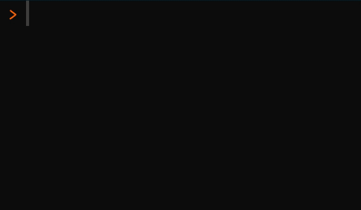
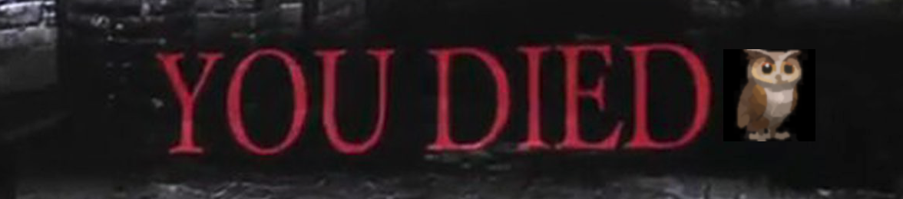

install.packages("remotes") # if not installed already
remotes::install_github("matt-dray/ActionSquirrel")
tl;dr
I created the {ActionSquirrel} package. It contains an {R6}-powered playable game for the R console, which includes images (well, emoji) and sounds (thanks to the {sonify} package).
GameRs
I’ve written before about the idea of games that you can play in R. For example, I replicated a text-based version of Pokemon Blue’s Safari Zone. This was made possible by using the {R6} package by Winston Chang, which provides an implementation of object-oriented programming (OOP) in R.
An R6 class has ‘fields’ (variables) and ‘methods’ (functions) that can adjust the field values. This means you can manipulate the state of the object over time. You can read more in the {R6} documentation or in Hadley Wickham’s Advanced R book.
So you could create a class with a field that provides the location of a character, then let the user apply a method to overwrite that location. If you print the ‘before’ and ‘after’ states, you’ll get the impression of movement for the character.
Winter is coming
With this in mind, I made a game and put it in the {ActionSquirrel} package. It’s pretty simple; consider it a concept.
You play as a squirrel in a woodland, hoarding nuts before winter sets in. You have to collect 8 nuts in 30 moves or you won’t survive. To make matters worse, there’s an owl on patrol that wants to eat you.
The package contains a single ‘ActionSquirrel’ class. It has fields for the location of game objects—emojis for a tree, a squirrel, an owl and a nut—on a grid.1 It has a method to move the squirrel around the grid, which also executes code to assesses and change other field states. For example, it can check how many moves have happened, can adjust the owl’s position and spawn a new nut after the last one was collected.
Demo
You can install from GitHub.
Note that I’ve developed and tested this only in RStudio v1.4.1717 with R v4.1.1 running on macOS Big Sur. I think emoji rendering, console-clearing and the sound effects may not work on all platforms and setups.
Basic instructions are printed when the package is attached.
library(ActionSquirrel)Welcome to {ActionSquirrel}!
* New game: x <- ActionSquirrel$new()
* Move: e.g. x$move('up')
* Info: x$pause()Start
Initiate an object with the ActionSquirrel class by assigning ActionSquirrel$new() to a name (I’ll use x for demo purposes). This clears the console and generates a forest grid that contains the squirrel, a nut and an owl, along with tallies for moves and nuts collected.
x <- ActionSquirrel$new()
🌳 🌳 🌳 🌳 🌳
🌳 🌳 🌰 🌳 🌳
🌳 🌳 🌳 🐿 🌳
🌳 🦉 🌳 🌳 🌳
🌳 🌳 🌳 🌳 🌳
Moves: 0
Nuts: 0Methods are applied to your object with the dollar symbol accessor2 in the form object$method(). We can use the pause() method to get game instructions, for example.
x$pause()P A U S E
* Aim: get eight nuts before winter (30 moves)
* Move: e.g. x$move('up')
* Chain: e.g. x$move('u')$move('r')
* New game: x <- ActionSquirrel$new()
* Info: x$pause()
* Source: github.com/matt-dray/ActionSquirrelState
To understand a little more the mechanics of R6-classes, you could take a peek at the current state of the fields and methods by printing your ActionSquirrel-class object.
It isn’t necessary for gameplay purposes to see this information, but for learning purposes it provides a sort-of ‘meta’ view of the current game state. (It will also help you ‘hack’ the game, more on that later!)
x<ActionSquirrel>
Public:
active: TRUE
clone: function (deep = FALSE)
initialize: function ()
move: function (where = c("up", "down", "left", "right"))
moves: 0
n_loc: 8
nuts: 0
o_loc: 17
overworld: 🌳 🌳 🌳 🌳 🌳 🌳 🌳 🌰 🌳 🌳 🌳 🌳 🌳 🐿 🌳 🌳 🦉 🌳 🌳 🌳 🌳 🌳 🌳 🌳 🌳
pause: function ()
s_loc: 14The most relevant of these are the moves and nuts counts; the *_loc values that specify the location of the squirrel, owl and nut in the overworld vector; and the move() method for controlling the player.
Move
You move the squirrel through the forest with the move() method. It has one argument, where, that takes the directions "up", "down", "left" and "right" (you can also just supply the first letter of the direction).
x$move("up")
🌳 🌳 🌳 🌳 🌳
🌳 🌳 🌰 🐿️ 🌳
🌳 🦉 🌳 🌳 🌳
🌳 🌳 🌳 🌳 🌳
🌳 🌳 🌳 🌳 🌳
Moves: 1
Nuts: 0Congratulations: your move tally has increased by one. You may also have noticed that the owl moved up one space as well; it moves one space vertically or horizontally, or stays still, with equal probability.
I built in collision detection, so you can’t exceed the limits of the grid by trying to go left if you’re already on the leftmost edge, for example.
Note that you can also take more than one move at a time (elite gamer tech) by ‘chaining’ methods, like x$move("up")$move("left"), but this is risky because you might collide with the owl.
Importantly, the whole R console is cleared before the updated grid is printed. This gives an impression of animated graphics, since the console overwrites the previous state with the current state.
Now to collect the nut.
x$move("left")
🌳 🌳 🌳 🌳 🌳
🌳 🌳 🐿️ 🌳 🌳
🌳 🦉 🌳 🌳 🌳
🌰 🌳 🌳 🌳 🌳
🌳 🌳 🌳 🌳 🌳
Moves: 2
Nuts: 1Congratulations, your nut tally has increased by one and a new nut has spawned in a random location. Collect at least eight nuts, or you won’t survive winter.
Owl
You’ll get a game over if the owl eats you (i.e. you occupy the same spot). So if you move left and the owl happens to move up…
x$move("left")
🌳 🌳 🌳 🌳 🌳
🌳 💀 🌳 🌳 🌳
🌳 🌳 🌳 🌳 🌳
🌰 🌳 🌳 🌳 🌳
🌳 🌳 🌳 🌳 🌳
Moves: 3
Nuts: 1
Y O U D I E D !
The owl ate you.
G A M E O V E R
* New game: x <- ActionSquirrel$new()
* Source: github.com/matt-dray/ActionSquirrelThe location of your death is marked with a skull and you’ll get a game over with information about what happened. At this point, the active field of the class is set to FALSE, which prevents you from moving again.

Winter
After 30 turns the game will end because you’ve reached winter. You’ll get a victory screen if you collected 8 nuts, otherwise a failure screen.
Aside: {R6} allows for ‘public’ and ‘private’ fields and methods. I’ve used public methods for the ActionSquirrel class, so that users can see the contents and state of the class and manipulate them. I think this is good for learning purposes.
It also means that we can ‘hack’ the game to the end state by overwriting the number of nuts and moves remaining! First, a victory after having collected eight nuts or more:
x <- ActionSquirrel$new()
🌳 🌳 🌳 🌳 🌳
🌳 🌳 🌰 🌳 🌳
🌳 🌳 🌳 🐿 🌳
🌳 🦉 🌳 🌳 🌳
🌳 🌳 🌳 🌳 🌳
Moves: 0
Nuts: 0x$moves <- 29
x$nuts <- 10
x$move()
🐿️ 💤 🌰 🌰 🌰
🌰 🌰 🌰 🌰 🌰
🌰 🌰 🎄 ⛄ 🎄
🌨 ⛄ 🎄 ⛄ 🎄
⛄ ⛄ 🌨 🎄 🌨
Moves: 30
Nuts: 10
Y O U S U R V I V E D !
Sufficient winter nut cache!
G A M E O V E R
* New game: x <- ActionSquirrel$new()
* Source: github.com/matt-dray/ActionSquirrelOur little squirrel friend is hibernating with the nut cache nearby. Meanwhile, the signs of winter fill the rest of the grid. Your success is confirmed in a printed statement.
And what if we end the game with an insufficient nut cache?
x <- ActionSquirrel$new() # start new game
🌳 🌳 🌳 🌳 🌳
🌳 🌳 🌰 🌳 🌳
🌳 🌳 🌳 🐿 🌳
🌳 🦉 🌳 🌳 🌳
🌳 🌳 🌳 🌳 🌳
Moves: 0
Nuts: 0x$moves <- 29
x$nuts <- 4
x$move()
🐿️ 💀 🌰 🌰 🌰
🌰 ❌ ❌ ❌ ❌
🎄 🎄 🌨 🎄 ⛄
🎄 ⛄ 🎄 ⛄ 🎄
⛄ 🎄 🌨 ⛄ ⛄
Moves: 30
Nuts: 4
Y O U D I E D !
Insufficient winter nut cache!
G A M E O V E R
* New game: x <- ActionSquirrel$new()
* Source: github.com/matt-dray/ActionSquirrelOh dear.
SFX
So we’ve got a player character, an enemy, collectibles, a goal and ‘animated’ visuals. The only thing missing is audio.
Luckily, you can force your computer to make noise with the {sonify} package. I’ve used it before in this blog to represent COVID-19 data in audio form. For {ActionSquirrel}, I used it to make short, simple beeps to indicate a move, nut capture, collision with the edge of the grid, a win and a death. Here’s what those sound like, respectively:
The death sound is a flatline, because of course it is.
R6, 7, 8
So, give it a go. What’s your high score? How guilty did you feel when the squirrel died?
There’s lots of ways this could be improved. Maybe the owl could have ‘AI’ that encourages it to move towards the player or nut. Maybe there could be another enemy with different movement patterns. I welcome any bug reports or suggestions in the GitHub repo for {ActionSquirrel}, or maybe you can fork it and make it better.
This post completes my R6 OOP hattrick alongside posts on Animal Crossing and Pokémon. Next time I might move onto {R7}, a new package for OOP in R that’s being coordinated and developed in the open by the R Consortium.
Environment
Session info
Last rendered: 2023-07-08 12:34:07 BSTR version 4.3.1 (2023-06-16)
Platform: aarch64-apple-darwin20 (64-bit)
Running under: macOS Ventura 13.2.1
Matrix products: default
BLAS: /Library/Frameworks/R.framework/Versions/4.3-arm64/Resources/lib/libRblas.0.dylib
LAPACK: /Library/Frameworks/R.framework/Versions/4.3-arm64/Resources/lib/libRlapack.dylib; LAPACK version 3.11.0
locale:
[1] en_US.UTF-8/en_US.UTF-8/en_US.UTF-8/C/en_US.UTF-8/en_US.UTF-8
time zone: Europe/London
tzcode source: internal
attached base packages:
[1] stats graphics grDevices utils datasets methods base
other attached packages:
[1] ActionSquirrel_0.1.0
loaded via a namespace (and not attached):
[1] digest_0.6.31 R6_2.5.1 signal_0.7-7 fastmap_1.1.1
[5] sonify_0.0-1 xfun_0.39 knitr_1.43.1 htmltools_0.5.5
[9] rmarkdown_2.23 tuneR_1.4.4 cli_3.6.1 compiler_4.3.1
[13] rstudioapi_0.14 tools_4.3.1 evaluate_0.21 yaml_2.3.7
[17] rlang_1.1.1 jsonlite_1.8.7 htmlwidgets_1.6.2 MASS_7.3-60 Reuse
CC BY-NC-SA 4.0